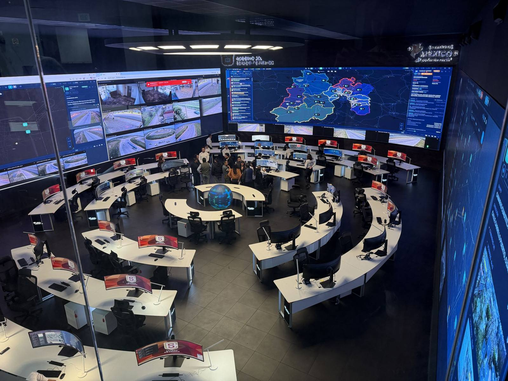
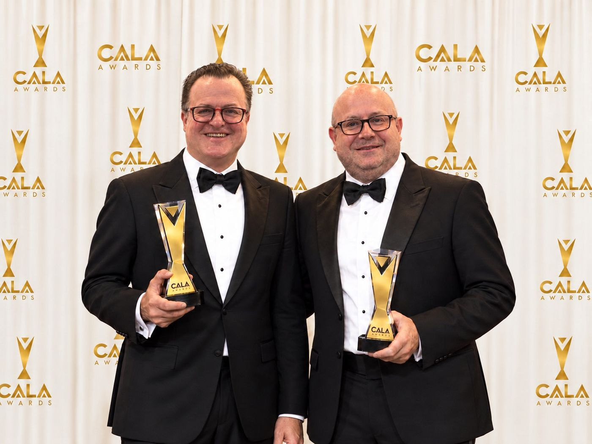

Reconocimiento 2026
Mejor Proyecto de AV Instalado · C5 Estado de México
La renovación integral del C5 Toluca, el centro de mando de la Secretaría de Seguridad del Estado de México, fue reconocida por AVI Latinoamérica como el mejor proyecto audiovisual instalado del año.
